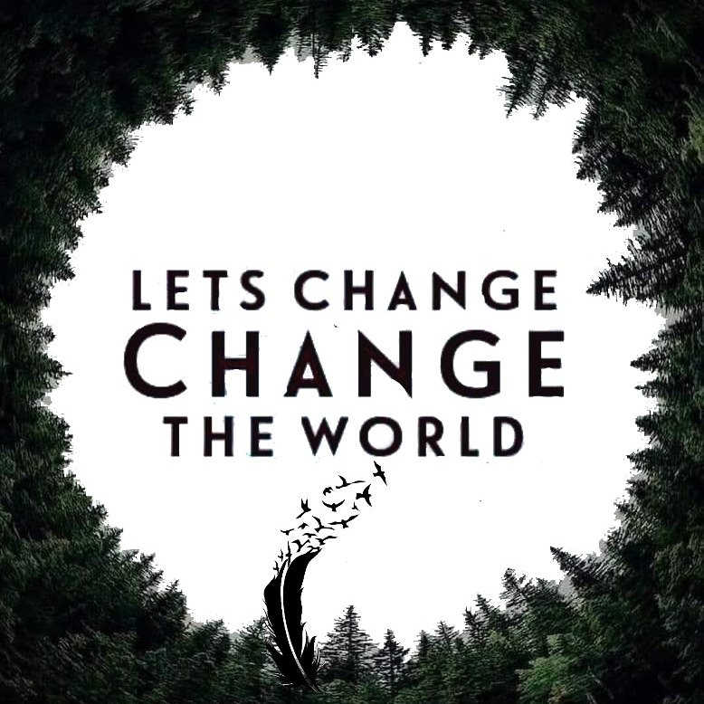

No one is to small to play a part in changing this world and making it a better place!
Our work demonstrates that by combining the right knowledge with the appropriate actions one can create meaningful changes which will serve as leading examples and inspire the implementation of sustainability projects in any location on Earth .
Feel free to get in touch. We would love to hear from you!
“Be the change you wish to see in the world.” Most of us have heard this quote by Mahatma Gandhi and perhaps even been inspired by it. It’s a beautiful sentiment and one that reminds us how everyone has the power to make an impact. Whether it’s by volunteering at a food bank, starting a nonprofit, or caring for your kids, what you do today can lead to lasting change. But sometimes when we hear about so many global issues on the news, it can be difficult to believe that just one person can make a difference. Luckily, social change doesn’t have to happen instantly or on your own. By working together with your community to change lives one day at a time, your actions can have a meaningful impact. If you’re interested in making the world a better place, read on to discover how one person can change the world and what makes a social change project successful. Then, discover a few tips on how you can change lives for the better.
Take Jaime Escalante, for example. Escalante taught math in Los Angeles and discovered a way to teach his struggling students. He put together a strategy that helped poorly-performing students not only grasp basic math skills but pass the AP Calculus test. Through crafting his program and researching the best ways to help his students, he was able to change thousands of lives.[10]
Additionally, find like-minded people who are willing to help. Most ways to change the world depend on support–even if you have life-changing ideas, you can’t do it alone.[8] In the early twentieth-century, Maria Montessori noticed that children learn better enlisted researchers to test her theory. They found that her educational techniques were helpful for young children, particularly those with autism.[11] To this day, Montessori education systems or activities are used to help children learn all over the world. But never underestimate the power of changing one person’s life. Twenty-year-old Anne Sullivan graduated from Perkins School for the Blind and moved across the country to teach a deaf-and-blind girl named Helen how to communicate with the world around her. Helen Keller grew up to be an advocate for those with disabilities and remained close friends with Sullivan for her entire life.[12] Don’t think that because you’re only helping a few people that your contribution doesn’t matter.